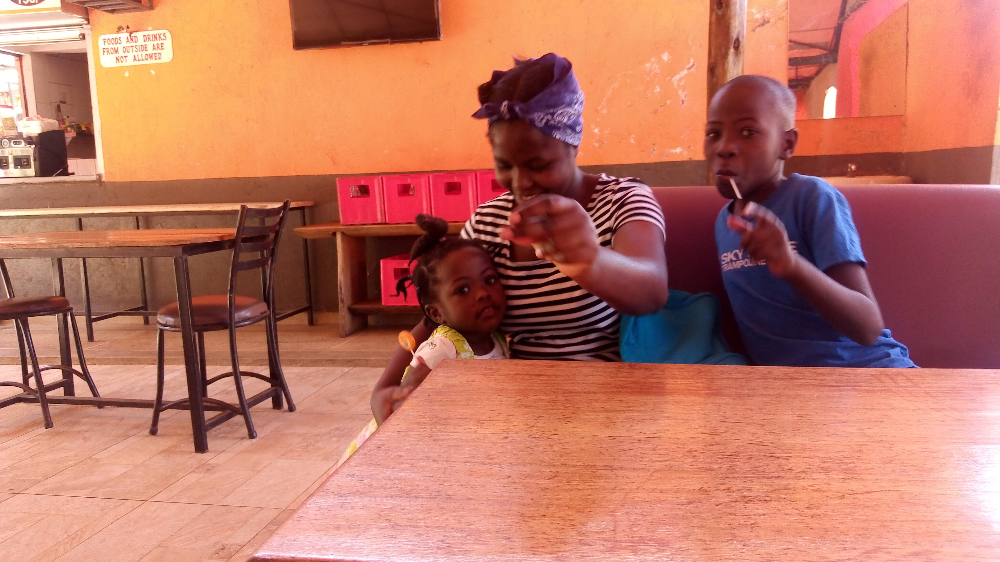

My name is Philip Odhiambo and I will tell you more about myself in the about me
section.
To start though, here are my core tech competencies:
This section showcases top among the projects I have build
Description: This project is about myself – what I do, education, skills and hobbies, and about me.
Technologies Used:
Description: This app help tourists and travellers book accomodation, tickets or both.
Technologies Used:
Description: This app help the pharmacy staff record items received as issued. It can the calculate the current inventory.
Technologies Used:
This section I go a little deeper about myself and I promise you its also interesting.
So read to the end to know about current engagement, education background, skills and hobbies,
and my family.
Currently I’m pursuing Software Design career path. I embarked on this path on realization that tech is the present and future, and that I have a part to play in the present and the future.I did my research and Moringa school came out prominent in my location – Nairobi Kenya.
I have over 10 years work experience in Pharmaceutical sector, specifically in hospital pharmacy.During this time I have not only expanded career knowledge but I have experienced first hand the necessity of technology at the place of work. Consequently I have juggled up with tech to see how it can help overcome my challenges. I am the tech champion at my place of work. I have also experience the need for collaboration in an organization without which the system cannot function.
I graduated high school in 2003 after which I joined Pharmaceutical Technology course the following year. I graduated in 2007 and has ever since been working in pharmacy at various places and in various roles.
Computers and Information Technology: This is a skill that has emerged from hobby. My interest in tech started as a curious user to skilled user (tech consumer) and finally to content creator. I have been able to build a few tools to help in my place of work, one of which I have listed in the projects' section.
Playing Guitar: I learned to play guitar in college and I have always enjoyed playing it as a lone band (playing by myself).
I’m married to one beautiful and supportive wife Winnie. We have one handsome boy, Matt, and a beautiful girl, Natasha, who enjoys very much me playing the guitar.
